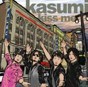

kasumi / 1st MA [kiss me] 2018.12.12 ON SALE!

新生kasumiの名刺代わりになるmini albumが出来ました！
全国リリースに相応しいバラエティに富んだ６曲を厳選し、どの瞬間を切り取ってもkasumiを味わっていただけると思います。
メンバー４人がそれぞれ影響を受けた音楽やエンターテイメント文化を吸収し、さらに先の憧れを持つステージに挑むべく、妥協なく自分たちを凝縮した自慢の１枚です！
<収録曲>
1.「NEWWAVE DISCO」
2.「Please, I love you」
3.「グっとエキサイティング」
4.「サンシャインが待ちきれない」
5.「Liar」
6.「あの娘はスパイシーガール」
DLCR-18121 / 定価:¥1,528(税込)